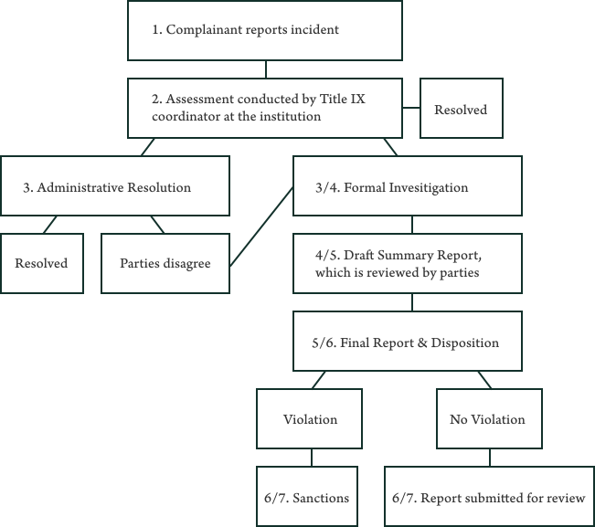
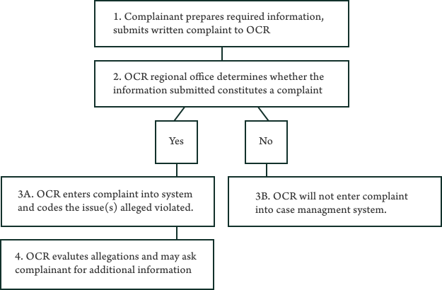

Who
Anyone can file a Title IX complaint, whether you’re associated with the instituion or not. You do not need to be the victim of the alleged discrimination. You can do this process on your own, or find a legal reprsentation for help*.
*Advocacy group Know Your IX recommends the latter, and listed advice on their site from activists and survivors on finding an attroney).
What inisitution procedures should have been in placed?
Each school must publish a policy of against sex discrimination, must have a Title IX Coodrinator, publish their grievance procedure outlining the complaint, investigation, and disciplinary process, and promptly respond to complaints. Read More
When
Within 180 days of the ocurrance of the reported incident. If you choose to file a case internally within the institution, but then also wished to file a case at the OCR, he complaint must be filed with OCR within 60 days after completion of the institutional grievance process.
How
You can file an internal complaint at your institution, or an Office of Civil Rights complaint directly to the Department of Education. You are not required to have gone through the internal process to file a OCR complaint. In other instances, lawsuits have also been filed, but this can only be filed by the affected person.
What does a typcial process look like?
Filing internally (Here's an example from New York University):
Source: NYU Title IX information
Filing at OCR:
Source: Celene Reynolds, The Mobilization of Title IX across U.S. Colleges and Universities, 1994-2014, Social Problems, Volume 66, Issue 2, May 2019, Pages 245–273, https://doi.org/10.1093/socpro/spy005
Fig. 1 Sample Thought Process